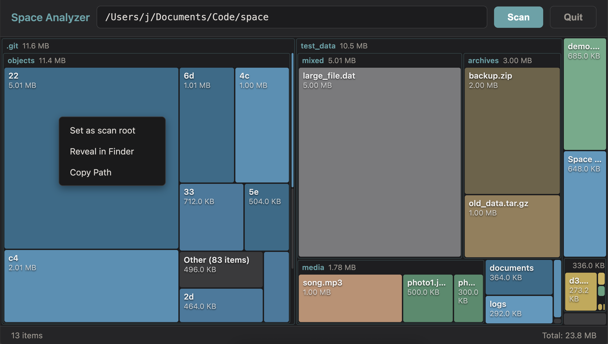
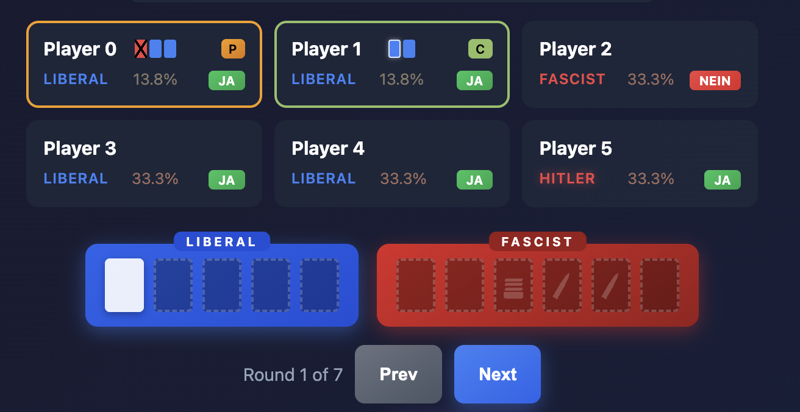
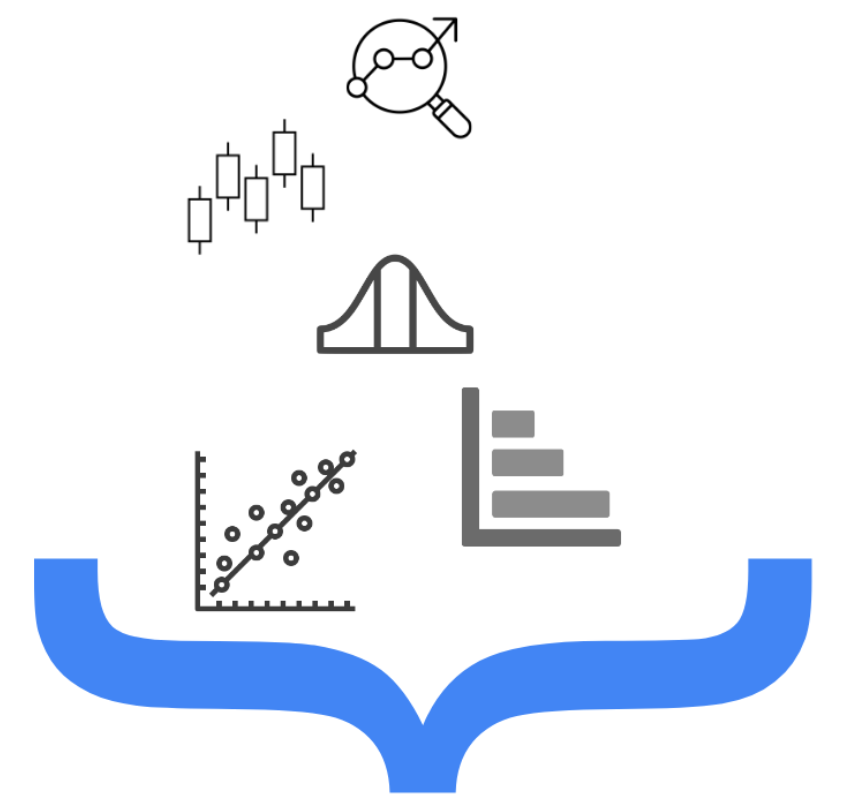
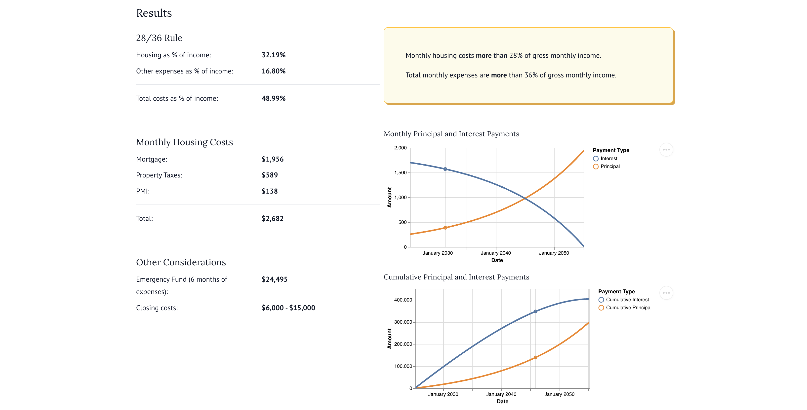
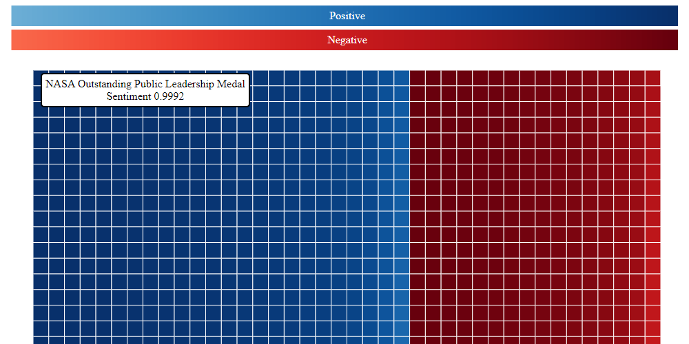
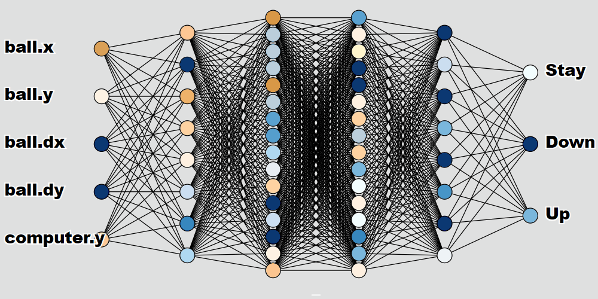
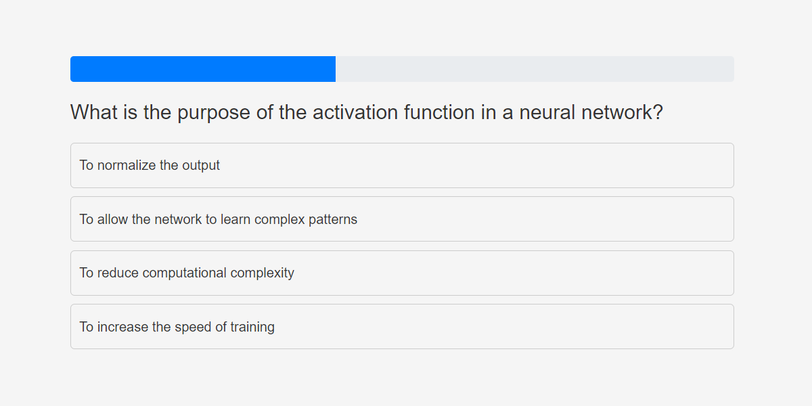
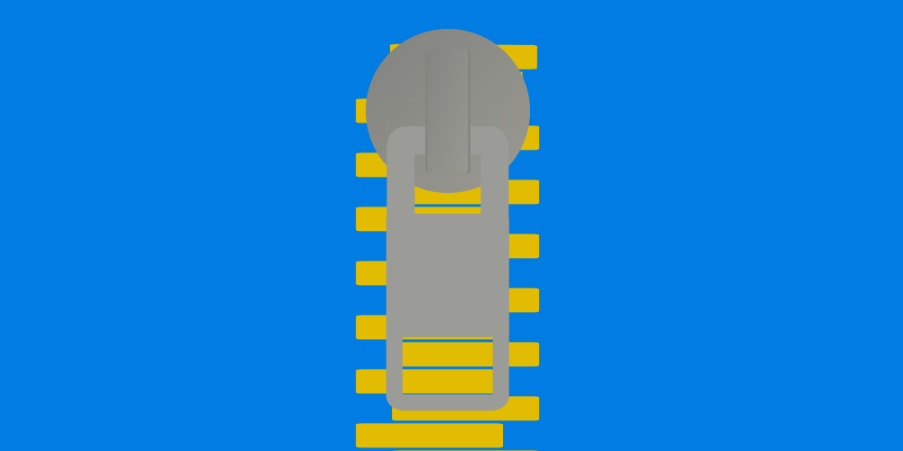

Space Analyzer
A simple disk space visualization tool for macOS.

A simple disk space visualization tool for macOS.

Built a simulation of Secret Hitler to view bayesian probabilties on the fly.
Automating receiver cooling with a 12V trigger, relay, and a data-backed temperature check.
AI-assisted training, and race day recap of the Madison Marathon.
I analyzed past RAGBRAI routes and developed an algorithm to predict where the race will take place in 2025.

A collection of Jupyter notebooks covering common data science techniques, built with Jupyter Book.

An interactive mortgage calculator to help inform a new home purchase.

This project aims to explore sentiment models by visualizing their predictions on a subset of Wikipedia articles.

Play against a neural network RL agent in your browser! Incredible how much computation we have today.

A quiz game with common machine learning questions generated by an LLM. Admittedly, I switched to using Anki instead, but I still thought the concept was fun.

Title says it all.
Project I developed to practice custom Javascript D3 visualizations while I was also relearning polar coordinates.